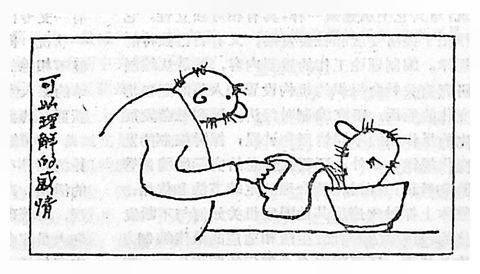
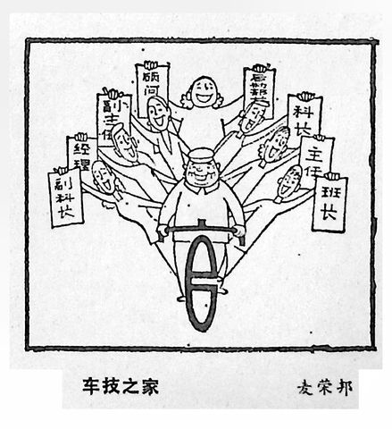
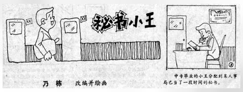
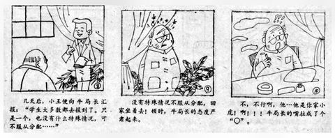

Nepotism 14
-
 无题 · Untitled (“So many hats — who are they for?”)
无题 · Untitled (“So many hats — who are they for?”)
Xi Feng 西风. Renshi (Personnel), 1985 no. 1 (whole no. 1), inside back cover. -
 无题（通讯《撕网》配图） · Untitled (drawing for the report “Tearing the Net”)
无题（通讯《撕网》配图） · Untitled (drawing for the report “Tearing the Net”)
Qing Jun 青军. Renshi (Personnel), 1986 no. 1 (whole no. 4), p. 15. -

可以理解的感情 · Understandable Feelings
Unattributed. Renshi (Personnel), 1986 no. 1 (whole no. 4), p. 43. -
 劝告 · Advice
劝告 · Advice
Nie Xuhua 聂旭华. Renshi (Personnel), 1986 no. 1 (whole no. 4), inside back cover. -

车技之家 · A Family of Trick Cyclists
Mai Rongbang 麦荣邦. Renshi (Personnel), 1987 no. 2 (whole no. 17), inside back cover. -
 桥 · Bridge
桥 · Bridge
Gao Fengcheng 高风成. Renshi (Personnel), 1987 no. 3 (whole no. 18), p. 44. -
 通知开会（题图） · Notice of a Meeting (header drawing)
通知开会（题图） · Notice of a Meeting (header drawing)
Unattributed. Renshi (Personnel), 1987 no. 6 (whole no. 21), p. 48. Reprinted from Zhongguo qingnian bao (China Youth Daily). -
 通知开会（插图） · Notice of a Meeting (inset drawing)
通知开会（插图） · Notice of a Meeting (inset drawing)
Unattributed. Renshi (Personnel), 1987 no. 6 (whole no. 21), p. 48. Reprinted from Zhongguo qingnian bao (China Youth Daily). -
 内线（讽刺诗画） · Inside Line (satirical poem drawing)
内线（讽刺诗画） · Inside Line (satirical poem drawing)
Drawn by Tang Shaoyi 唐少仪. Renshi (Personnel), 1987 no. 12 (whole no. 27), p. 39. -
 无题 · Untitled
无题 · Untitled
Wang Xiaogen 王小根. Renshi (Personnel), 1988 no. 1 (whole no. 28), inside back cover. -
 原来如此（题图） · So That's How It Is (title drawing)
原来如此（题图） · So That's How It Is (title drawing)
Unattributed. Renshi (Personnel), 1988 no. 2 (whole no. 29), p. 48. -

秘书小王 · Secretary Xiao Wang
Adapted and drawn by Nai Dong 乃栋. Renshi (Personnel), 1988 no. 5 (whole no. 32), p. 29. -

秘书小王（续三） · Secretary Xiao Wang (continued, 3)
Adapted and drawn by Nai Dong 乃栋. Renshi (Personnel), 1988 no. 5 (whole no. 32), p. 32. -
 秘书小王（续四） · Secretary Xiao Wang (continued, 4)
秘书小王（续四） · Secretary Xiao Wang (continued, 4)
Adapted and drawn by Nai Dong 乃栋. Renshi (Personnel), 1988 no. 5 (whole no. 32), p. 33.